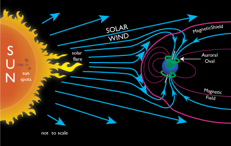

causes

A full understanding of the physical processes which lead to different types of auroras is still incomplete, but the basic cause involves the interaction of the solar wind with the Earth’s magnetosphere. The varying intensity of the solar wind produces effects of different magnitudes but includes one or more of the following physical scenarios.
-
A quiescent solar wind flowing past the Earth’s magnetosphere steadily interacts with it and can both inject solar wind particles directly onto the geomagnetic field lines that are ‘open’, as opposed to being ‘closed’ in the opposite hemisphere, and provide diffusion through the bow shock. It can also cause particles already trapped in the radiation belts to precipitate into the atmosphere. Once particles are lost to the atmosphere from the radiation belts, under quiet conditions, new ones replace them only slowly, and the loss-cone becomes depleted. In the magnetotail, however, particle trajectories seem constantly to reshuffle, probably when the particles cross the very weak magnetic field near the equator. As a result, the flow of electrons in that region is nearly the same in all directions (“isotropic”) and assures a steady supply of leaking electrons. The leakage of electrons does not leave the tail positively charged, because each leaked electron lost to the atmosphere is replaced by a low energy electron drawn upward from the ionosphere. Such replacement of “hot” electrons by “cold” ones is in complete accord with the 2nd law of thermodynamics. The complete process, which also generates an electric ring current around the Earth, is uncertain.
-
Geomagnetic disturbance from an enhanced solar wind causes distortions of the magnetotail (“magnetic substorms”). These ‘substorms’ tend to occur after prolonged spells(hours) during which the interplanetary magnetic field has had an appreciable southward component. This leads to a higher rate of interconnection between its field lines and those of Earth. As a result, the solar wind moves magnetic flux (tubes of magnetic field lines, ‘locked’ together with their resident plasma) from the day side of Earth to the magnetotail, widening the obstacle it presents to the solar wind flow and constricting the tail on the night-side. Ultimately some tail plasma can separate (“magnetic reconnection”); some blobs (“plasmoids”) are squeezed downstream and are carried away with the solar wind; others are squeezed toward Earth where their motion feeds strong outbursts of auroras, mainly around midnight (“unloading process”). A geomagnetic storm resulting from greater interaction adds many more particles to the plasma trapped around Earth, also producing enhancement of the “ring current”. Occasionally the resulting modification of the Earth’s magnetic field can be so strong that it produces auroras visible at middle latitudes, on field lines much closer to the equator than those of the auroral zone.
-
Acceleration of auroral charged particles invariably accompanies a magnetospheric disturbance that causes an aurora. This mechanism, which is believed to predominantly arise from strong electric fields along the magnetic field or wave-particle interactions, raises the velocity of a particle in the direction of the guiding magnetic field. The pitch angle is thereby decreased and increases the chance of it being precipitated into the atmosphere. Both electromagnetic and electrostatic waves, produced at the time of greater geomagnetic disturbances, make a significant contribution to the energizing processes that sustain an aurora. Particle acceleration provides a complex intermediate process for transferring energy from the solar wind indirectly into the atmosphere.
The details of these phenomena are not fully understood. However, it is clear that the prime source of auroral particles is the solar wind feeding the magnetosphere, the reservoir containing the radiation zones and temporarily magnetically-trapped particles confined by the geomagnetic field, coupled with particle acceleration processes.